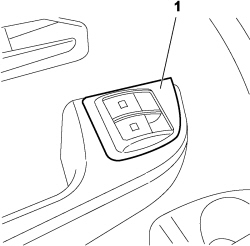
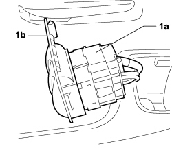

7040A56 SWITCH UNIT IN DASHBOARD - R.R.
- Path
- Procedures > 70 FITTINGS > 7040 BODYSHELL INTERIOR TRIMS AND FITTINGS > 7040A passenger compartment trim > 7040A56 SWITCH UNIT IN DASHBOARD - R.R.
- Kind
- repair procedure (removal / refitting; the operation number is the code)
- Applies to
- engines: 1.4 8v, 1.6 16v, 1.3 JTD 16V, 1.9 JTD 8V; all production periods
- Interactive page
- https://sloeber94.github.io/elrnDB-fDbl/en/#/223000193
Applies to: engines: 1.4 8v, 1.6 16v, 1.3 JTD 16V, 1.9 JTD 8V; production: da 12/03; only with equipment: MY 2005
 Removing
Removing
 Refitting
Refitting1. Release the switch trim/support.

Applies to: engines: 1.4 8v, 1.6 16v, 1.3 JTD 16V, 1.9 JTD 8V; production: da 12/03; only with equipment: MY 2005
1. Uncouple the switch unit (1a) from the trim/support (1b).

Applies to: engines: 1.4 8v, 1.6 16v, 1.3 JTD 16V, 1.9 JTD 8V; production: da 12/03; only with equipment: MY 2005
Refitting
RemovingCheck the condition of the trim/support.
Match the switch unit with the trim/support.
Fit the trim/support in its housing.